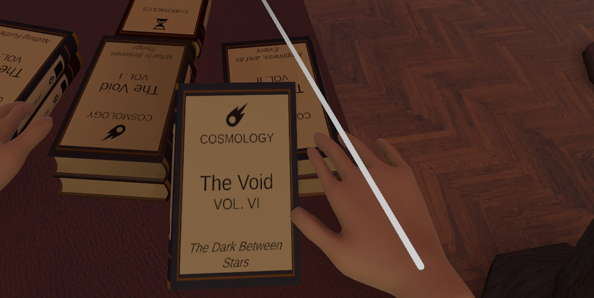

A cozy tidy-up game for VR
The Returns Desk: A Cozy Library
Tidy up a Victorian library: sort and shelve 864 books by hand. Out November 2, 2026 on Steam (PC VR) and Meta Quest.
The library has been closed for years, and the returns desk is full. You are the librarian. Pick up a book, read its cover, carry it to its shelf and slide it into its slot, by hand. 864 books, eight wings, one Victorian rotunda.
The Returns Desk is a relaxing indie VR game from Lamplit about organizing and sorting a whole library, one book at a time. No timers, no score, no fail state.
Trailer
Every book tells you where it goes

Nothing lights up the answer and nothing sorts itself. The cover has all you need:
- The emblem and color point to one of the eight wings, and the shade narrows it down further.
- The title is the row. Every shelf is labeled.
- The volume number is the slot, one to nine.
At first you follow the colors. Soon you walk straight to the numbers. Some books come back damaged. Rub them clean before they go on the shelf.
Open the library, one wing at a time
Every row you finish earns a point. Spend points at the rewards lectern to open another wing: its lanterns light up and its banner takes its color. You choose which wing opens first.
Points also buy help with the carrying, never with the searching:
- A book basket that holds four books
- Bigger deliveries of 30, 40 and 50 books at the desk
- A repair brush for damaged books
- Summon, to pull a book or the basket into your hand from across the room
- Quick Hands, to clean a damaged book the moment you pick it up
Rain on the glass, at the hour you like
Earn the weather back: rain on the dome, snow, wind, and a storm with thunder. Earn the time of day too, five hours from dawn to night, or set an hour of your own. Pick them at the lectern, choose how heavy the rain falls, or let the weather change on its own.
The reading room
Off the rotunda is a quieter room to open for yourself.
- A fire to poke with the irons until it flares
- A gramophone with four records: put one on, wind the crank and listen
- Display cases and a trophy shelf that fill as you work: a volume for every row you finish, a trophy for every wing, and a faint outline where the ones still to come will stand
Made for your hands
Your hands close around what you hold: a book by its edge or its corner, the basket by its handle, a record by its rim, a fire iron by its shaft.
No hurry
A relaxing organizing game with no timers, no score, no fail state, and nobody else in the library. The game saves as you go, so you can take the headset off mid-shelf and pick up where you left off.
Comfort and settings
- Seated or standing play, with a crouch button
- Teleport or smooth movement
- Snap or smooth turning, with adjustable angle and speed
- Comfort vignette with adjustable strength
- Left- or right-handed
- Haptics on or off
- Master, ambience and effects volume
- Graphics settings for shadows, anti-aliasing, textures and detail
Good to know
- VR only. There is no flat-screen mode.
- Needs tracked motion controllers. Hand tracking is not supported.
- Single player. English text, no voice acting.
Press kit
- Developer and publisher
- Lamplit, a solo studio based in Azerbaijan
- Release date
- Platforms
- Steam (Windows PC VR) and Meta Quest
- Price
- $12.99 USD
- Genre
- Cozy tidy-up VR game. Single player, no timers, no fail state
- Controls
- Tracked motion controllers, seated or standing
- Languages
- English text, no voice acting
- Stores
- Steam · Meta Quest
- Press contact
- lamplit.games@proton.me
Short description
Put 864 books back where they belong in a Victorian rotunda library, by hand, in VR. Every cover tells you its wing, its row and its slot, and nothing sorts itself. Finished rows open new wings and bring back the weather and the hours of the day. No timers, no fail state.
Screenshots


Click a screenshot for the full 2560×1440 image.
Downloads
- LogoPNG with a transparent background
- Key artJPG, 2560 px wide
- Screenshots 1 · 2 · 3 · 4 · 5 · 6 · 7JPG, 2560×1440
- TrailerMP4, 1080p, 1:45


Everything here may be used in coverage of the game.
About Lamplit
Lamplit is a solo indie studio based in Azerbaijan that makes cozy VR games. The Returns Desk is its first game.